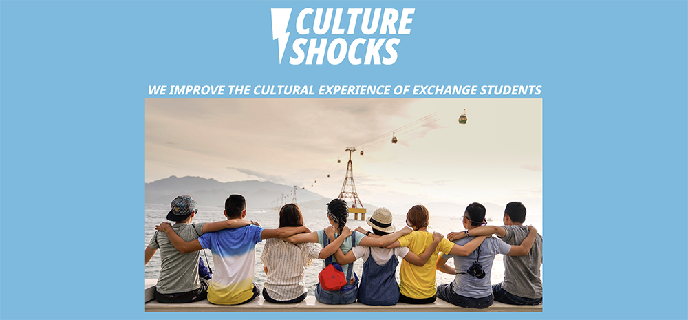
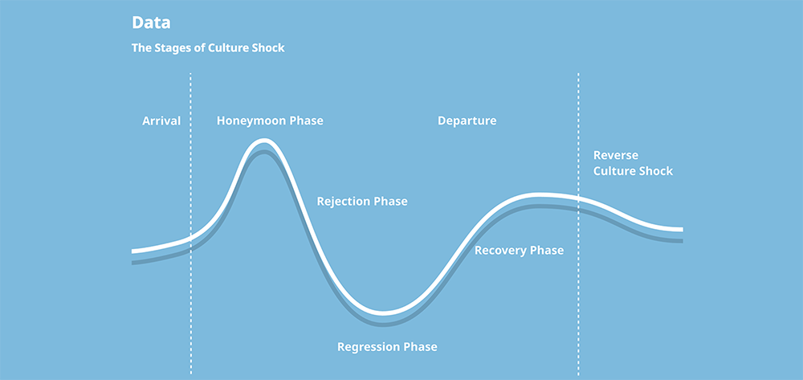

Culture Shocks Case Study
The Challenge
This project began at a day-long hackathon for non-profit organizations, which was sponsored by the City of Seattle and other organizations. Volunteer hackers like myself were teamed with non-profit organizations, educated on their mission and needs, and set to work to create digital solutions for them by the end of the day.
Culture Shocks, a non-profit that works to emotionally support study-abroad and international students all over the world, was a brand-new organization that did not yet have a digital presence of any kind. They were in need of a very simple, static website, which they planned to use to make presentations to potential investors and partners. I teamed with one other hacker; first, we interviewed the organization’s representative about objectives for the organization and site, and what could be achieved in the space of the afternoon. Based on these conversations, my teammate and I established an idea for the look and feel of the site, as well as what aspects we would emphasize as the most important points to cover in our limited time.
Over the course of the day, our team of two built a static site with HTML and CSS. At the end-of-day presentations to the entire room, our project was considered especially impressive because we began with nothing, and ended with a serviceable site that could be brought to stakeholders.
The Solution
 On a purely personal note, I want to mention the perspective shift that my team experienced in hearing about the pressures that international students face during their time abroad. Conventional wisdom presents such experiences as pure, romantic adventure, but there can be a real sense of displacement and loneliness for students away from home. Even more surprising, and perhaps counterintuitive, is the idea of “reverse displacement”, which is another wave of loneliness and discomfort that occurs after returning home.
When this was explained to us, something really clicked for me. Many years ago, a Danish student came to my small high school. Her many friends, myself included, were all surprised when she committed suicide very soon after returning home at year’s end. No one knew that she’d been struggling.
This project took on quite a personal meaning for me, and shows how human, and humanizing, technology can be. That can be easy to forget.